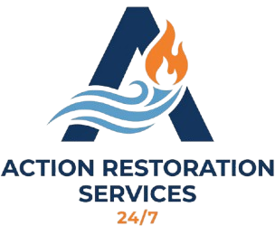
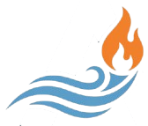

Site Stabilization
Secure compromised areas and evaluate immediate safety and access risks.


Fire Damage ServicesFire events can leave structural damage, corrosive soot, and persistent odor. We deploy a restoration workflow focused on safety, residue control, and progressive reconstruction planning.
Secure compromised areas and evaluate immediate safety and access risks.
Targeted cleanup methods reduce spread of residues and airborne contamination.
Layered deodorization strategy supports comfortable re-occupancy planning.
We inspect fire, smoke, and water suppression impact to shape priority tasks.
Contaminated materials are removed and salvageable surfaces are cleaned in phases.
Odor treatment and air quality actions are used to support healthier indoor conditions.
Repair sequencing is aligned to function, appearance, and pre-loss objectives.
Yes. Smoke can travel well beyond the ignition zone and affect walls, HVAC pathways, and soft materials.
Yes. Fire events often include water damage, and restoration plans should account for both conditions.
Yes. Action Restoration Services supports commercial recovery planning and restoration workflows.
Start with emergency assistance or request a quote for planned restoration scope.